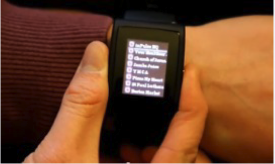
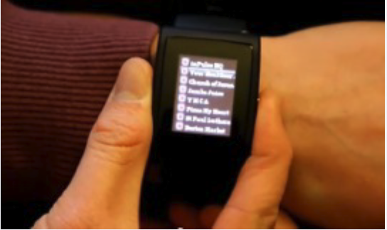
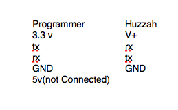
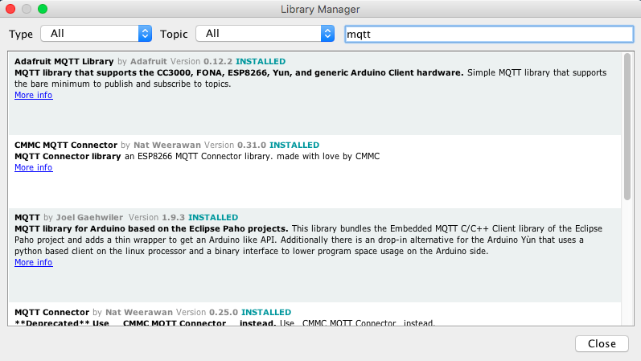

Introduction to Interactive Objects
Introduction to Interactive Objects
Introduction to Interactive Objects
Introduction to Interactive Objects
Code
Houskeeping
- Connect to wifi
- Intstall This Driver: http://bit.ly/1FGNigh
- Intstall Arduino: http://bit.ly/1R2xniM
- Install nodeJS, www.nodejs.org
WHAT IS A MICROCONTOLLER:
Most of us know what a computer looks like. It usually has a keyboard, monitor, CPU (Central Processing Unit), printer, and a mouse. These types of computers, like the Mac or PC, are primarily designed to communicate (or “interface”) with humans.
WHAT IS A MICROCONTOLLER:
There are also little computers all around us, running program and quietly doing calculations, not interacting with humans at all. These computers are in your car, on the Space Shuttle, in a toy, and maybe even inside your hairdryer.
 


WHAT IS A MICROCONTOLLER:
We call these devices “microcontrollers”. Micro because they’re small, and
controller because they “control” machines, gadgets, whatever
!
They’re cool because, you can build a machine or device,
write programs to control it and then let it work for you automatically. And they are cheap!
ARDUINO!

WHAT IS ARDUINO:
Arduino is an open source physical computing platform based on a simple
input/output (I/O) board and a development environment that implements
the Processing language (www.processing.org).
Arduino can be used to develop standalone interactive objects
or can be connected to software on your computer (such as Flash, Processing,
NodeJS or Max/MSP).
!
ARDUINO TERMS
- “sketch” – a program you write to run on an Arduino board
- “pin” – an input or output connected to something. e.g. output to an LED, input from a knob.
- “digital” – value is either HIGH or LOW. (aka on/off, one/zero) e.g. switch state
- “analog” – value ranges, usually from 0-255. e.g. LED brightness, motor speed, etc.
WHAT IS ARDUINO:
We wont be using the Arduino Hardware today, But we will be using it's programming environment.
Arduino core for ESP8266 WiFi chip
This project brings support for ESP8266 chip to the Arduino environment. It lets you write sketches using familiar Arduino functions and libraries, and run them directly on ESP8266, no external microcontroller required.
Go to Sketch->Include Libraries->Manage Libraries
Intall the ESP8266 and the Adafruit ESP66 Libraries
http://arduino.esp8266.com/stable/package_esp8266com_index.json
Programming the Huzzah

Programming the Huzzah
We have to Program the Huzzah in a special Way

We have to Program the Huzzah in a special Way

After connecting we have to hold down the Left button, press the right button and let go of the left
The Huzzah is a mini Arduino with Wifi, that is $10.00!
Upload Blink
Upload esp8266_wifi
Upload WiFiWebServer
Lets install the Adafruit MQTT Library
Upload mqtt_button